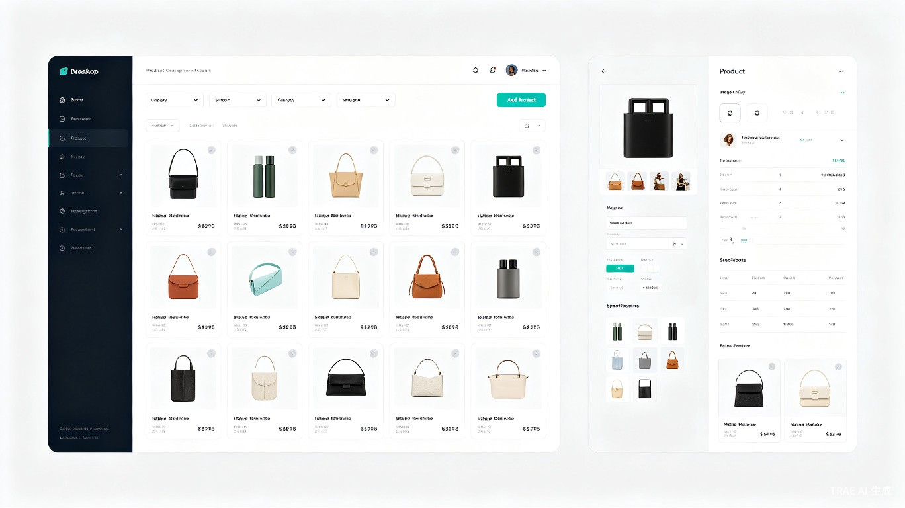
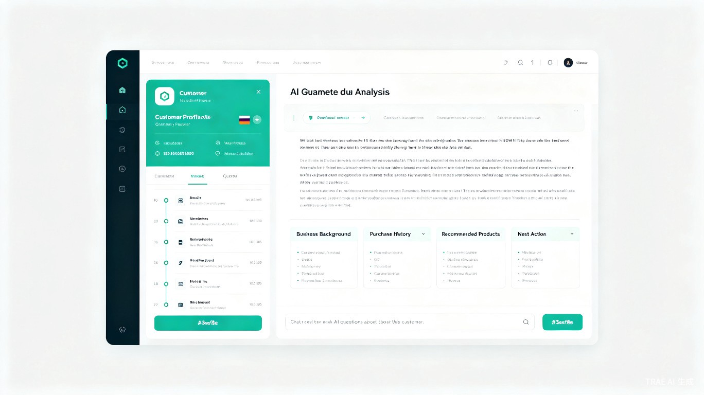
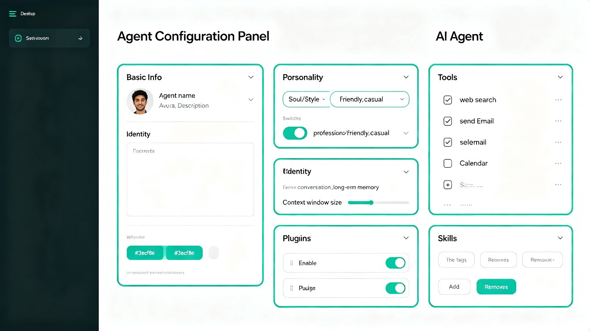
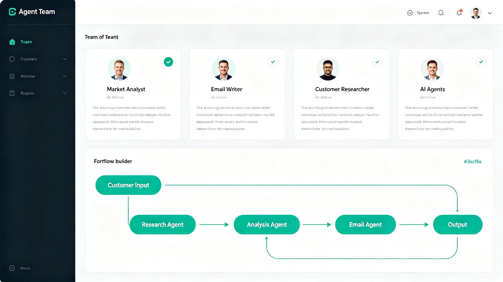
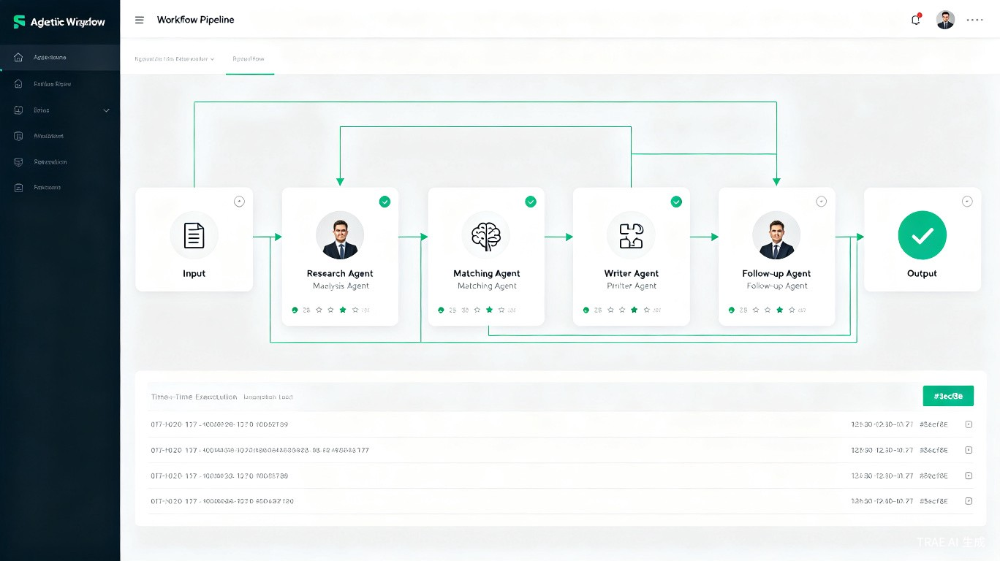

TradeMate — 让 AI 真正成为外贸人的生意伙伴
想解决什么问题：市面上已有类似 Accio Work 的桌面端外贸工具，但按积分扣费、按月订阅非常昂贵，企业团队版起步就是 2 万/年。对于个人外贸从业者或中小型贸易公司来说，这笔成本难以长期承担。更关键的是，传统外贸工作方式存在严重的信息管理痛点：客户背调每次生成一个 MD 或 Excel 文档本地保存，产品信息分散在各个文件夹，无法在同一页面可视化展示和管理；缺乏系统化的 CRM 和产品管理工具，导致客户跟进效率低、产品推荐不精准。
为什么会想到做这个：我自己从事传统外贸行业多年，也尝试过各类桌面端 AI 工具。但发现这些工具在 Skill 的安装、调试，以及智能体的创建等方面对新手非常不友好——选择合适的 Skill、搭建适合外贸场景的智能体需要大量学习和试错。更重要的是，即使有了 AI 工具，客户和产品信息的管理仍然依赖本地文件（MD/Excel），可视化程度很低，每次判断和决策都要在多个文件间切换，大幅降低工作效率。随着 AI 大模型能力的成熟，我决定自己动手，打造一个成本低、本地用、直接上手的桌面端 Agentic 应用——内置完整的 CRM 和产品管理，让信息可视化；预置外贸场景智能体模板，降低使用门槛；支持长久记忆，让 AI 真正理解你的生意。
大概是什么产品：Windows 桌面应用（Electron），本地运行，数据完全存储在用户设备上。内置 CRM 系统、产品信息管理中心、可配置 AI 智能体（支持独立配置 Soul、Identity、Memory、Tools、Plugins、Skills）、MCP 外部工具对接。用户自带 OpenAI/Claude API Key 或运行本地 Ollama 模型，无需平台积分，无强制订阅，零月费。
目标用户与核心痛点
当前痛点
- 现有外贸工具（如 Accio Work）按积分扣费，月费高昂，个人和中小公司难以长期承担
- 企业团队版起步 2 万/年，成本门槛极高
- 客户背调资料分散在多个 MD/Excel 文件，无法在同一页面可视化查看
- 产品信息散落在各个文件夹，缺乏统一的产品管理中心
- 没有系统化的 CRM，客户跟进全凭记忆，容易遗漏重要节点
- AI 工具与实际外贸工作流脱节，无法形成从客户管理到产品推荐到跟进的闭环
TradeMate 解决方案
- 零订阅费：用户自带 API Key 或本地模型，无平台积分、无月费
- 内置 CRM：客户信息统一管理，背调资料可视化展示，跟进记录自动关联
- 产品管理中心：产品信息集中录入、分类、关联客户偏好
- AI 智能体：可配置 Soul、Identity，让 AI 真正理解你的生意和需求
- MCP 集成：对接外部工具，获取市场数据、竞品信息、客户背景
- 团队协作：支持多人共享客户和产品数据，协同跟进
面向用户
核心用户群体：个人外贸从业者、中小型贸易公司业务员、SOHO 外贸人。这些用户已经积累了一定量的客户数据和产品信息，但缺乏系统化的管理工具，同时对成本高度敏感。
使用场景：在 CRM 中查看客户全景资料，包括背调信息、跟进历史、关联产品；在产品管理中心快速查找产品并查看哪些客户可能感兴趣；配置专属 AI 智能体，让它理解你的行业和产品，自动推荐跟进策略；通过 MCP 对接外部工具，实时获取客户最新动态和市场信息。
五大核心能力模块
内置 CRM 系统
客户信息统一管理，背调资料可视化展示在同一页面。跟进记录、沟通历史、关联产品一目了然，告别分散的 MD/Excel 文档。

产品管理中心
产品信息集中录入、分类管理、规格参数可视化。支持产品与客户偏好关联，AI 自动推荐最适合的产品给对应客户。

客户背调 + AI 分析
背调资料不再分散存储，统一在客户详情页展示。AI 自动分析客户画像、购买偏好，生成跟进建议和推荐产品。

可配置 AI 智能体
每个 Agent 独立配置：Soul（性格）、Identity（身份）、Memory（记忆）、Tools（工具）、Plugins（插件）、Skills（技能）。拥有独立文件目录和上下文，真正个性化。

智能体团队 + MCP 工具
创建多个专属 AI 智能体组成团队，制定工作流程分工协作。通过 MCP 协议对接外部工具，扩展信息获取能力。

Agentic Workflow
多个 AI 智能体按工作流编排协作：研究员→分析师→匹配员→撰写员→跟进员。每个 Agent 负责专属任务，串联完成复杂外贸流程。
Agentic Workflow：智能体协作流程
输入任务
用户描述外贸任务需求
研究员 Agent
收集客户背景和市场信息
分析师 Agent
分析客户画像，匹配产品
撰写员 Agent
生成个性化开发信内容
跟进员 Agent
追踪反馈，提醒关键节点
可配置的 AI 智能体 + 无限扩展的 MCP 生态
AI 智能体配置
TradeMate 的每个 AI 智能体都可以独立配置：基本信息（名称、头像、描述）、Soul（性格风格，如 professional / friendly / casual）、Identity（身份定位和系统提示词）、Memory（对话记忆和长久记忆）、Tools（可用工具权限）、Plugins（插件启用状态）、Skills（知识库技能）。每个智能体拥有独立的文件目录（system.md、instructions.md、skills.md），真正实现个性化定制。
MCP 外部工具对接
通过 MCP（Model Context Protocol）协议，TradeMate 可以对接各类外部工具和数据源：Google 搜索获取客户最新动态、LinkedIn 查询客户背景、邮件系统发送开发信、日历工具安排跟进计划。这意味着 AI 的能力不再局限于本地数据，而是可以实时获取外部信息，大幅扩展了外贸工作的信息边界。
智能体团队
在 TradeMate 中，你可以创建多个专属 AI 智能体，每个智能体配置不同的 Soul（性格）、Identity（身份）和知识库， 然后将它们组织成智能体团队，制定工作流程实现分工协作。 例如："市场研究员"智能体负责收集客户背景信息，"产品分析师"智能体负责匹配推荐产品， "邮件撰写员"智能体负责生成个性化开发信。通过工作流程编排，多个智能体可以串联协作完成复杂任务。
系统架构：Electron + Local Gateway + 模块化服务
TradeMate 采用 Electron 桌面壳层 + Local Gateway（Express HTTP Server，端口 4097）的架构。 Gateway 作为本地 API 网关，统一协调各模块：SQLite 数据库存储（Prisma ORM，包含 Agents、Conversations、Messages、Skills、Plugins、MCP Servers、Datasets、Snapshots 等表）、 AI 模型提供商（OpenAI / Ollama，支持五级 Fallback 链）、浏览器自动化（Playwright + Connector Profiles）、 MCP Hub（外部工具服务器管理）、Plugin Manager（签名验证 + 白名单机制）、Data Governance（CSV/Excel 导入 + 快照 + 回滚）。 所有核心功能在用户设备上运行，不依赖任何云服务。
技术栈
项目数据
为什么 TradeMate 有价值
成本优势
零订阅费，用户自带 API Key 或本地模型即可使用。对比市面上 2 万/年起步的企业版工具，TradeMate 让个人和中小公司也能用上完整的 CRM + AI 外贸助手。
信息管理
告别分散的 MD/Excel 文档。内置 CRM 和产品管理中心，客户背调、产品信息、跟进记录全部可视化展示在同一页面，大幅提升信息管理效率。
智能扩展
可配置的 AI 智能体（Soul + Identity）让 AI 真正理解你的生意。MCP 对接外部工具，扩展信息获取能力，帮助外贸人更好地做生意。
长久记忆
AI 智能体具备长久记忆能力，持续学习你的业务偏好、客户特点和沟通风格。每次对话都在积累理解，让 AI 越来越懂你的生意。
TradeMate 的六大功能亮点
亮点一：零订阅费 + 本地优先
用户自带 API Key 或运行本地 Ollama 模型，不绑定任何 AI 平台，无需支付平台积分或月费。 所有数据本地存储在 SQLite 数据库中，无企业版门槛。让个人和中小公司也能无负担使用完整的 CRM + AI 能力。
亮点二：内置 CRM + 产品管理
内置完整的客户管理和产品信息中心。客户背调资料、跟进记录、关联产品在同一页面可视化展示， 告别分散的 MD/Excel 文档。产品信息集中录入、分类管理，支持与客户偏好关联。
亮点三：可配置 AI 智能体
每个 AI 智能体可独立配置：Soul（性格风格）、Identity（身份定位）、Memory（记忆设置）、 Tools（工具权限）、Plugins（插件）、Skills（知识库）。每个智能体拥有独立的文件目录 （system.md、instructions.md、skills.md），真正实现个性化定制。
亮点四：智能体团队 + Agentic Workflow
将多个智能体组织成团队，制定工作流程实现分工协作。例如：研究员智能体收集客户背景 -> 分析师智能体匹配产品 -> 撰写员智能体生成开发信。通过 Agentic Workflow 编排完成复杂外贸任务。
亮点五：MCP 工具对接
通过 MCP Center 配置外部工具服务器，让 AI 智能体能够调用外部能力：Google 搜索获取客户最新动态、 邮件系统发送开发信、日历工具安排跟进计划。扩展 AI 的信息获取和行动能力。
亮点六：长久记忆 + 持续学习
AI 智能体具备长久记忆能力，每次对话、每个决策都在积累对客户和业务的理解。 随着时间推移，AI 会越来越懂你的生意风格、客户偏好和产品特点，提供越来越精准的建议。
Agentic Workflow：从任务输入到结果交付
以下展示了 TradeMate 的 Agentic Workflow 如何处理一次典型外贸任务： 用户输入任务需求后，多个 AI 智能体按编排好的流程协作执行—— 研究员 Agent 通过 MCP 工具收集客户背景和市场信息， 分析师 Agent 基于长久记忆分析客户画像并匹配产品， 撰写员 Agent 生成个性化开发信， 跟进员 Agent 追踪客户反馈并在关键节点提醒用户。 每个 Agent 都有专属职责，通过工作流串联完成复杂任务，全流程可视化监控。